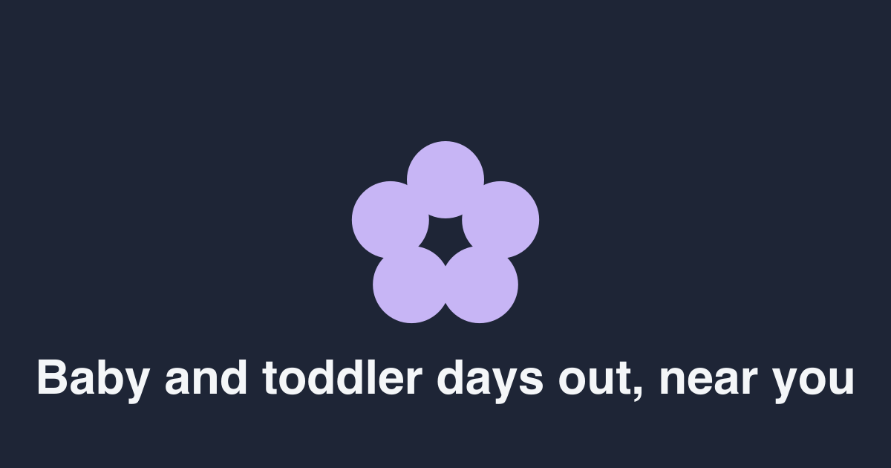

For immediate release · London, October 2026
Doddily puts every baby and toddler class in the UK on one timetable
A new iPhone app built by two Hackney parents shows what’s on for your little one today, near you, in time order. No account, no ads, no scrolling through five apps.
Doddily, launched on the App Store on 2 October 2026, lists more than 13,500 baby and toddler classes and groups across the UK, from library rhyme times and NHS family hubs to sensory classes, swimming, stay and play and soft play, alongside 129,000 parks, playgrounds, libraries and places with baby change.
Open it, add your postcode and your children’s ages, and Today shows that day’s sessions in time order with the walking time from your door. Filters for free, no booking and rainy day narrow it down. Every listing carries the times, price, age range, how to book and the address, with one tap to directions, the provider’s own booking page, your calendar or a reminder.
“We built the thing we kept wishing existed at 7am. You have a baby who naps at 11 and a toddler who needs to run, and the answer to ‘what’s on near us this morning?’ is scattered across Instagram, Facebook groups, council PDFs and word of mouth. Doddily puts it on one page.”
Doddily only lists classes and places that are already published online, and every entry links back to the provider so parents can check before they go. Nothing is collected: no account, no tracking, no ads. Your postcode, your children and your saved places stay on your phone.
“Parents don’t need another feed. They need a timetable that respects their time. Four screens, and that’s the app.”
Doddily is available now on the App Store for iPhone, priced at £2.99 with Family Sharing. An Android version is in development. Class providers can have their sessions listed by emailing hello@doddily.app with a link to their page.
Doddily in numbers
- 13,572classes and groups, UK-wide
- 7,226with set days and times
- 3,912free sessions
- 129,642parks, playgrounds, libraries, baby change
- 921soft play centres
- 0accounts, ads, trackers
Counts from the live dataset on 4 October 2026; they grow weekly.
About Doddily
Doddily is an independent app made in Hackney, London by Victoria [Surname] and Marcos Silva, parents of [two]. It launched on the UK App Store on 2 October 2026. doddily.app · @doddily.app
Images

Hero imagePNG, 1200 × 630- App iconPNG, 180 × 180
 Today screenJPG
Today screenJPG Map screenJPG
Map screenJPG Saved screenJPG
Saved screenJPG You screenJPG
You screenJPG


Also: the release as text · print flyers (A5 poster and A7 card) · flyers on screen.
Press contact
Victoria [Surname] · hello@doddily.app